Sommaire
Section 01
Je voudrais remercier tout d'abord mes parents qui m'ont aidé à trouver un stage malgré les difficultés et qui m'ont encouragé.
Je voudrais remercier aussi le patron d'ADEAT qui a bien voulu m'ouvrir les portes de l'entreprise pour pouvoir accomplir ce stage sans difficulté.
Section 02
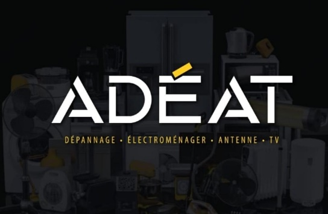
ADEAT est une entreprise qui a été créée par M. GOMBERT Mickaël en octobre 2022. Elle est localisée 7 Rue du Bignon aux Herbiers en Vendée. Elle s'occupe de la réparation d'électroménager, de télévision et d'antenne, ainsi que de la vente d'équipements d'occasion.
Elle compte aujourd'hui un gérant, GOMBERT Mickaël, et un apprenant en reconversion professionnelle, GUICHETEAU Benjamin. Chez ADEAT, toutes les journées sont organisées de la même façon : la moitié de la journée, les réparations sont réalisées à l'entreprise, et l'autre moitié, elles ont lieu au domicile des clients. Pour le moment, ADEAT est une TPE, mais elle est vouée à évoluer dans le temps.
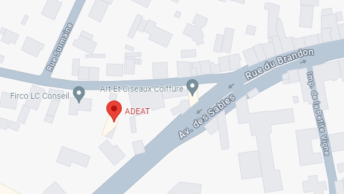
GOMBERT Mickaël — À la suite d'un Bac Pro en électroménager, il a travaillé pendant 20 ans au Leclerc des Herbiers dans la réparation d'électroménager, puis pendant 3 ans à Cholet et à La Roche-sur-Yon dans la réparation à domicile et en locaux. Il a créé sa propre entreprise ADEAT en octobre 2022.
GUICHETEAU Benjamin — Il est en reconversion professionnelle chez ADEAT.
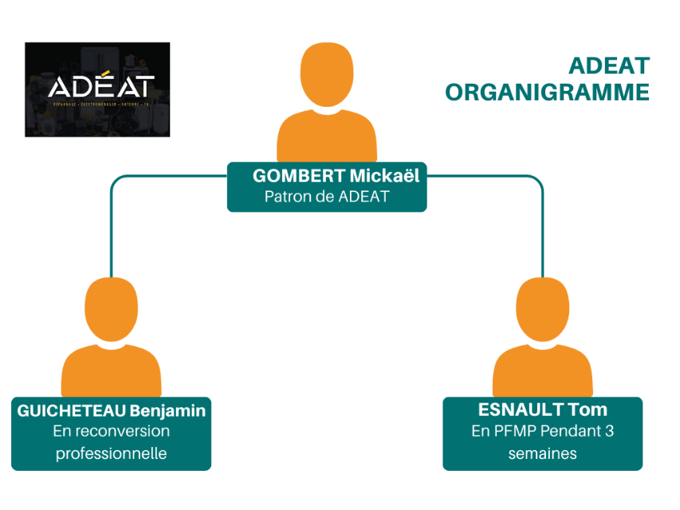
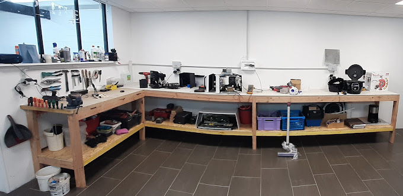
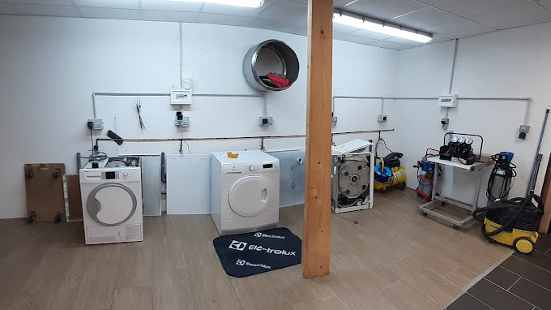
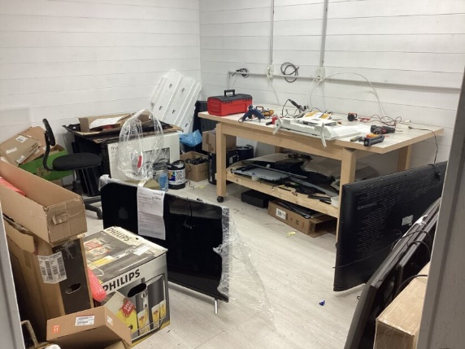
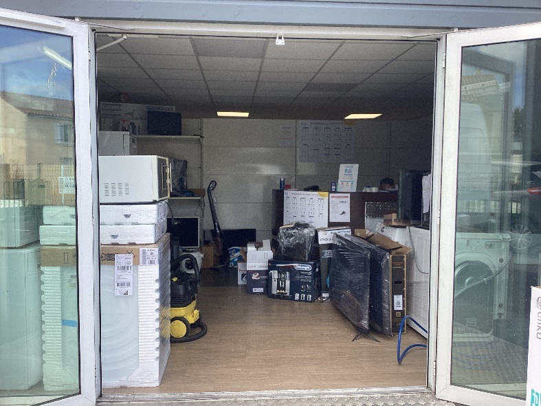
Section 03
J'arrive à l'entreprise et fais connaissance avec mon maître de stage et GUICHETEAU Benjamin. La première tâche est de démonter le dos d'une télévision pour remplacer sa carte d'alimentation défectueuse. Après remplacement, la télévision fonctionnait correctement. Elle a été remise aux paramètres d'usine, puis filmée pour la protéger.
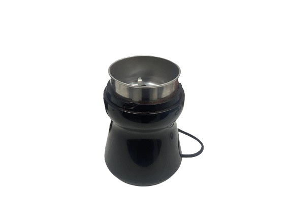
La seconde tâche consiste à changer deux bandeaux LED sur une télévision : démontage complet (dos, carte d'alimentation, carte principale, écran, plaques de diffusion), remplacement des bandes LED, test avec un testeur LED, puis remontage et validation finale.
J'ai également raccourci le câble défectueux d'un moulin à café en coupant la partie usée, en soudant les fils (terre, phase, neutre) avec un fer à souder et de l'étain, puis en les protégeant avec des gaines thermorétractables.
Enfin, j'ai diagnostiqué deux télévisions en panne : vérification des fusibles au multimètre, analyse de la carte d'alimentation, recherche de pièces chez le fournisseur.
Diagnostic d'un micro-onde ne chauffant pas : test de l'ampèremètre, repérage du fusible défaillant sur la sécurité de porte, remplacement et validation. Changement de la carte d'alimentation d'un second micro-onde. Diagnostic d'un troisième micro-onde avec carte de sécurité de porte défaillante : repérage de la référence pour commande.
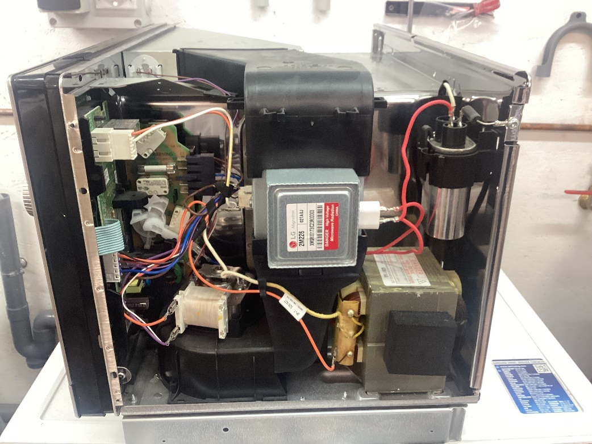
J'ai également dessoudé un condensateur d'une carte de pompe de lave-linge (fer à souder + pompe à étain), puis effectué le diagnostic d'un nettoyeur haute pression.
Installation de la carte de sécurité de porte du micro-onde diagnostiqué la veille. Diagnostic de deux micro-ondes ne chauffant pas : test des fusibles, de la sécurité de porte, puis du magnétron (composant qui crée les ondes). Conclusion : magnétrons défaillants, vérification de disponibilité chez le fournisseur.
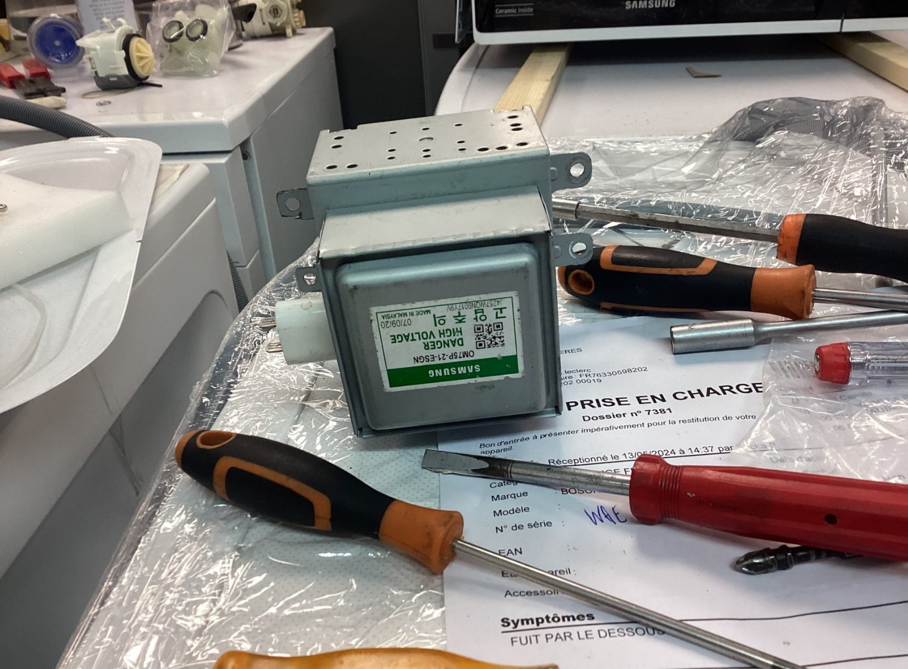
Diagnostic d'un troisième micro-onde : condensateur haute tension défaillant. Soudure du nouveau condensateur sur la carte de la pompe, puis d'une résistance (même procédé). La pompe a explosé lors du test — impossibilité de réparer, annoncé au client.
Changement d'une barre de LED dans une télévision : démontage complet (dos, cartes, écran, diffuseurs), remplacement des barres, test, remontage et validation. La télévision a ensuite été nettoyée, filmée et placée à l'accueil.
Deuxième tâche : recherche de barres LED pour une vieille télévision dont le modèle n'était plus disponible. Solution trouvée : remplacement de la LED défaillante à l'unité en soudant des fils sur la connectique existante.
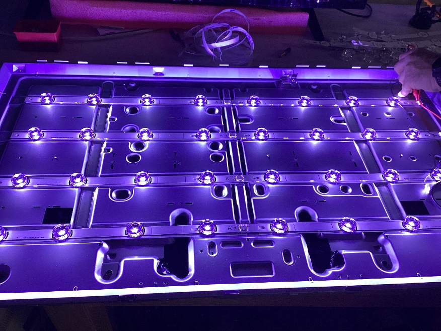
Première journée de prestations à domicile avec le camion équipé. Les interventions du jour :
L'après-midi : finition de la télévision commencée la semaine précédente (remise des plaques de diffusion et écran), raccourcissement d'un câble de grille-pain usé (soudure + gaines thermorétractables), changement de la prise d'une lampe cassée, diagnostic d'un four ne chauffant pas (résistance défaillante), démontage et réparation du câble intérieur d'un aspirateur.
Finition de l'aspirateur : remise en place des fils, fermeture, test de toutes les fonctions, nettoyage et mise à l'accueil. Remontage d'un four réparé antérieurement. Diagnostic d'une télévision sans affichage ni voyant : test du fusible, changement, test des composants (diode défaillante), pièce indisponible.
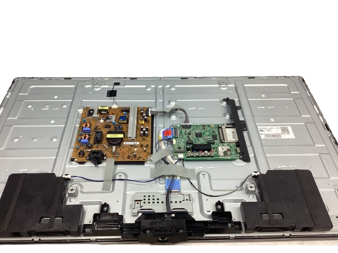
Changement d'une barre de LED dans une télévision : procédure complète de démontage/remontage, oubli d'un fil lors du premier test, correction et validation finale. Nettoyage et filmage.
Diagnostic d'un fer à repasser : test vapeur, constat d'une fissure sur la semelle, pièce indisponible. Diagnostic d'un micro-onde avec portière de sécurité défaillante : fusible coupé remplacé, mais la carte reste à changer (accord client en attente).
Diagnostic d'une centrale vapeur qui fait sauter le disjoncteur : tests successifs des composants (résistance, turbine), identification de la turbine défaillante, remplacement, validation et détartrage du fer.
Changement d'une barre de LED dans une télévision : procédure complète avec test au testeur LED, validation et filmage.
Remontage d'un four après changement de la résistance par Benjamin, test et validation. Changement d'un magnétron dans un micro-onde : placement, branchement, vissage, test. Un bruit bizarre lors du premier test disparaît à l'ouverture — après contrôle et refermeture, tout fonctionne.
Diagnostic d'un sèche-linge : ouverture, constat d'un encrassement important, courroie abîmée et roulement cassé (billes sortantes). Mise de côté pour devis client.
Journée de prestations à domicile. Interventions :
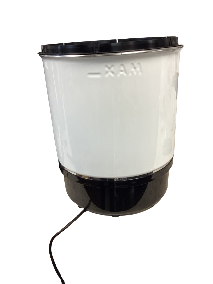
L'après-midi : remontage d'une cafetière, soufflage du sèche-linge démonté avec une soufflette reliée à un compresseur, diagnostic d'une machine à bocaux (carte indisponible — pièce irréparable), changement d'une barre de LED.
Diagnostic d'une télévision sans affichage : fusible intact, carte d'alimentation extraite, composant CMS cassé visible, carte disponible chez le fournisseur, devis à établir.
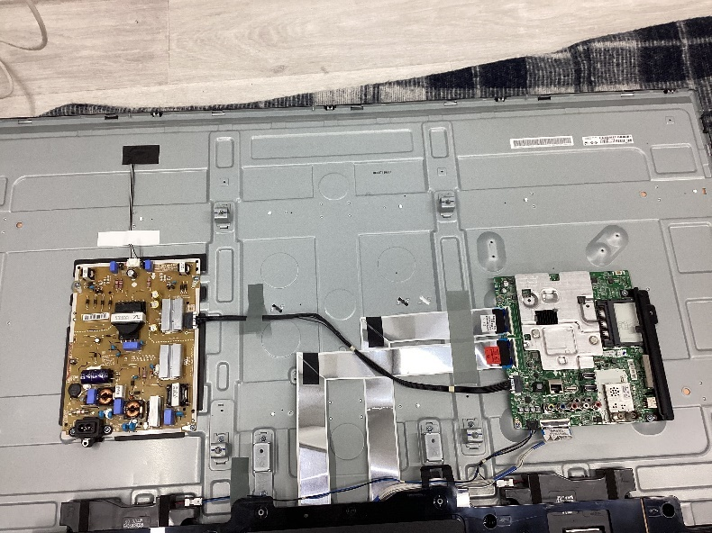
Dernière tâche : changement complet des barres LED sur une télévision (étude de cas — voir section 04).
Installation d'une résistance dans un four : démontage du dos, débranchement des fils, extraction difficile de la vieille résistance (coupée en deux), placement de la nouvelle avec tournevis, remontage et test.
Consolidation d'une prise d'antenne sur une télévision : ouverture, étamage de la prise pour la solidifier, test avec câble coaxial (chaînes TNT visibles), filmage.
Début d'un changement de LED sur une télévision Samsung : démontage du dos, des cartes, de l'écran, des diffuseurs et d'un plexiglass. Spécificité de ce modèle : les LED sont fixées sur le châssis, décalées par rapport au centre.
Suite des LED Samsung : collage et clipsage des nouvelles LED (procédure délicate), remise des diffuseurs, écran, cartes et haut-parleurs. Lors du test : bande noire et fissure interne à l'écran détectées — irréparable (écran trop coûteux).
Observation de la méthode de réparation des Cookeo : lecture du code d'erreur, identification de la pièce défaillante par test, commande et remplacement si confirmé.
Changement de la carte de sécurité de porte d'un micro-onde défectueux. Diagnostic d'un second micro-onde ne chauffant pas : condensateur défaillant identifié, mis de côté avec la pièce. Fabrication d'une plaque de mica pour micro-onde : calque sur l'ancienne plaque, découpe et installation.
Démontage de la télévision Samsung avec écran cassé pour récupérer les barres de LED posées (chauffage au sèche-cheveux pour décoller les barres, extraction au tournevis plat, fermeture et envoi en déchèterie).
Remontage de la machine à bocaux à l'aide des photos prises lors du démontage, mise en carton pour remise au client. Démontage d'une cafetière et soufflage pour nettoyage.
En fin de journée, au revoir à toute l'équipe d'ADEAT, complétion des papiers de stage et remise de chocolats à l'équipe.
Section 04
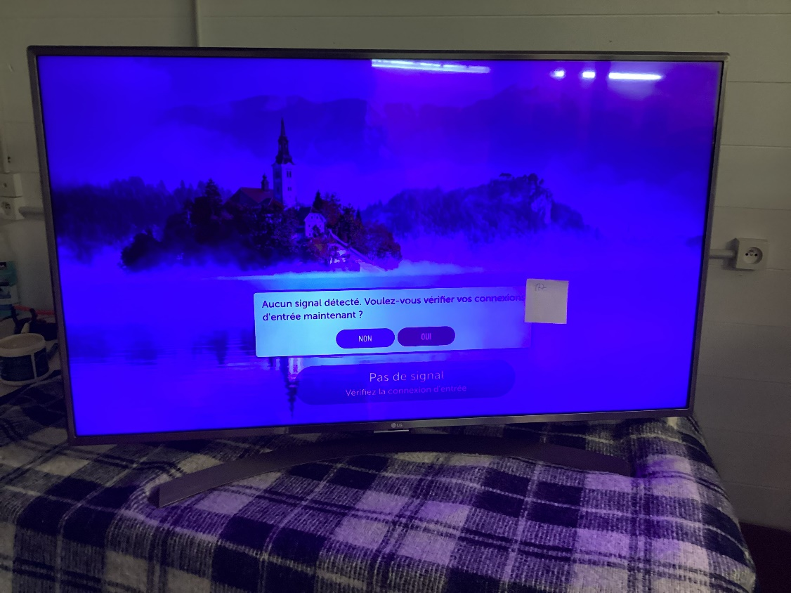
Le client signalait un problème de colorimétrie rendant sa télévision bleutée, ce qui gênait le visionnage. Après analyse des différentes parties de l'appareil (écran, boîtier, cartes électroniques, connectique, audio, unités de commande, modules sans fil), la conclusion était que les barres LED avaient vieilli et changé de couleur avec le temps. Un devis a été établi pour obtenir l'accord du client.
Le changement de barres LED est une intervention courante dans le métier de réparateur de télévision : il s'agit d'un protocole précis à respecter dans le bon ordre pour éviter tout dommage.
Retrait des pieds (4 vis), puis du capot arrière pour accéder à l'intérieur. Les vis sont triées pour faciliter le remontage.
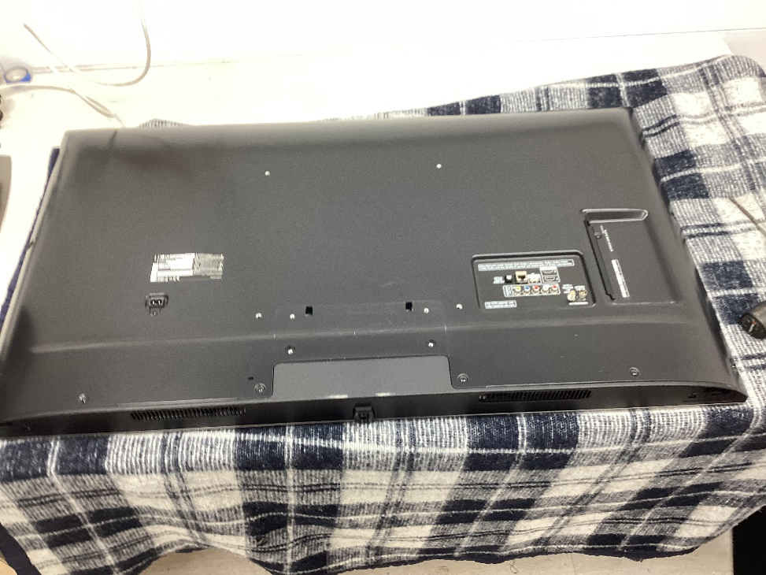
Retrait de la carte d'alimentation et de la carte principale (vis + câble d'alimentation + nappes d'écran dévissées et débranchées, mises dans une serviette de protection). Retrait également du boîtier WLAN/Bluetooth, des deux haut-parleurs, de toutes les accroches et caches. Déclipsage des clips de maintien des LED et d'un diffuseur.
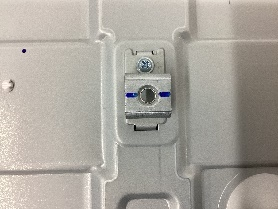
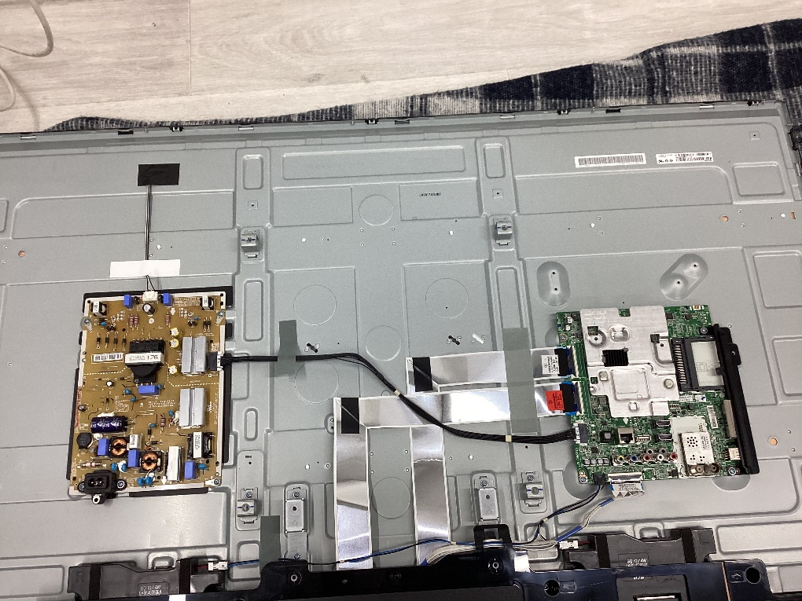
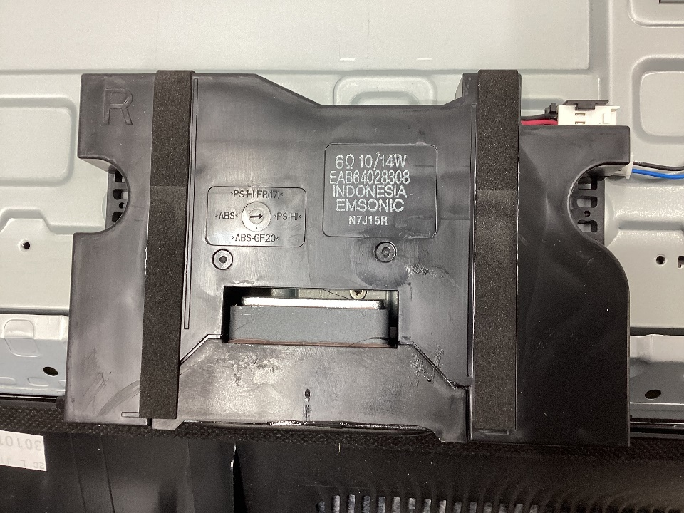
Retournement de la télévision. Les cartes de l'écran sont fixées temporairement avec du scotch bleu. L'écran est retiré avec des ventouses pour ne pas l'abîmer, ainsi que les diffuseurs (plaques qui diffusent la lumière des barres LED).
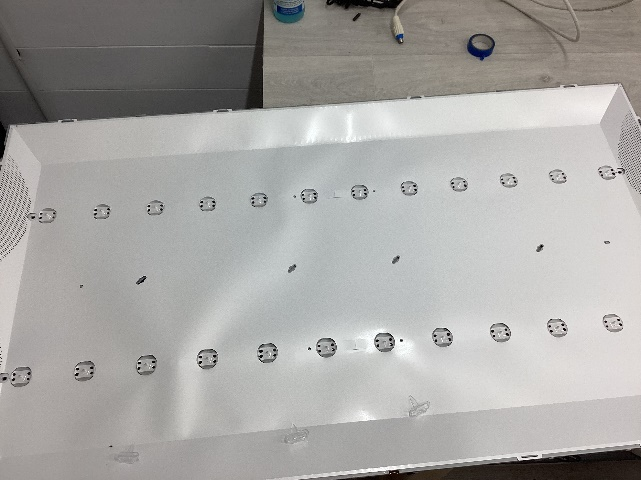
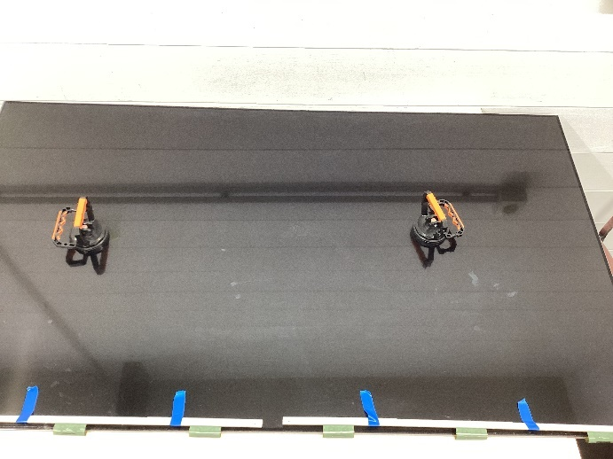
Décollement des anciennes barres LED avec un tournevis plat. Retrait du double-face des nouvelles barres, placement et pression ferme pour adhérence. Test avec le testeur de barres LED : fonctionnement confirmé.
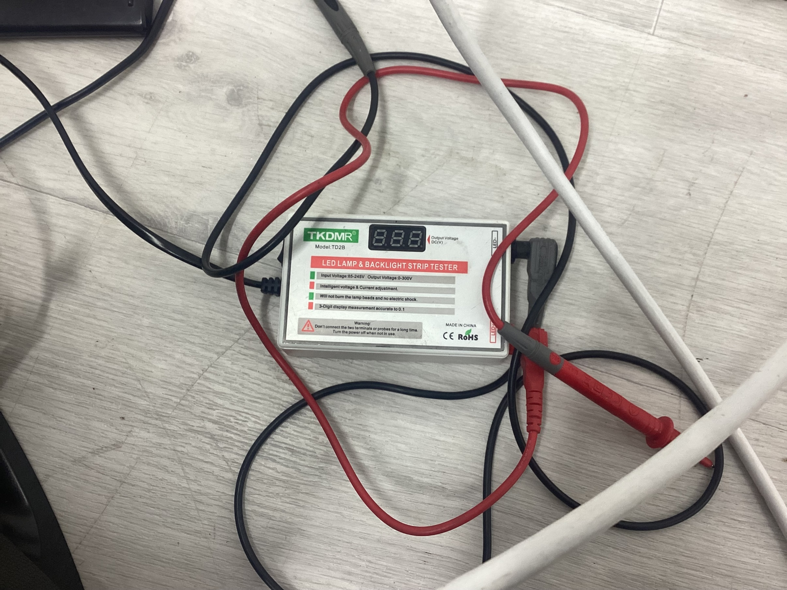
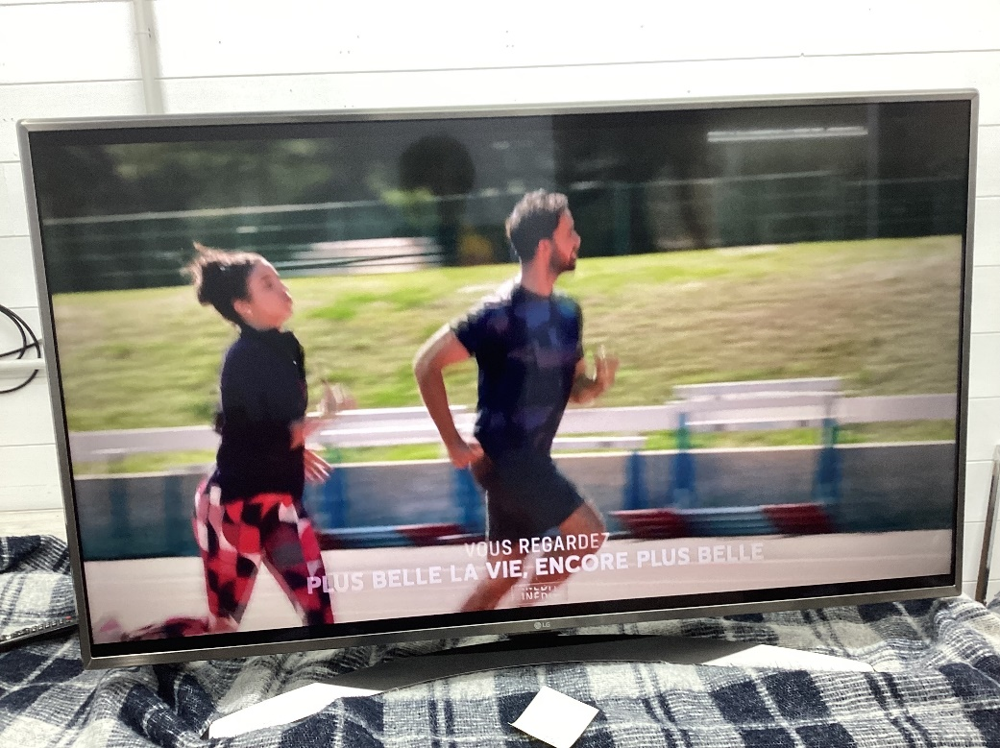
Remise en place des clips, diffuseurs (nettoyés pour éviter les tâches noires à l'image) et écran (ventouses). Remise des cartes de l'écran avec tournevis, retournement délicat de la télévision. Revissage des caches. Placement des deux cartes électroniques (nappes, câbles, vis). Remise des haut-parleurs clipsés. Test intermédiaire : tout fonctionne.
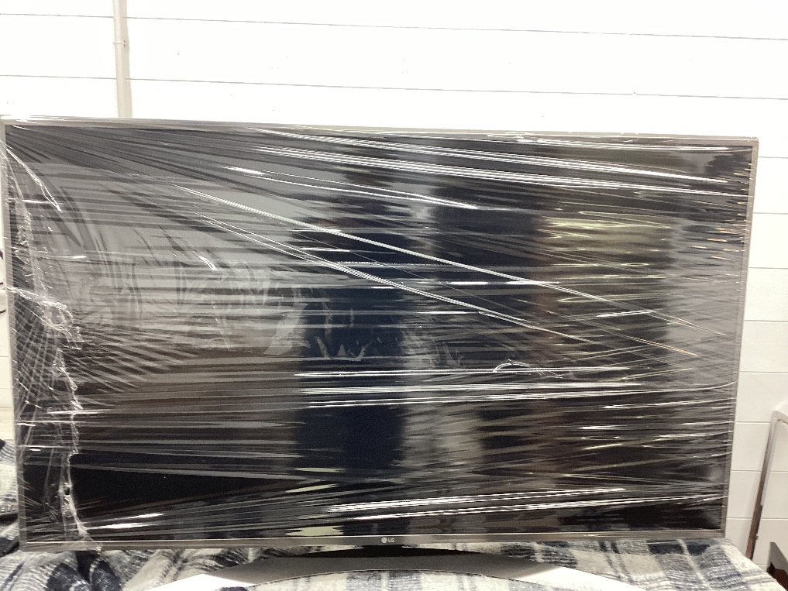
Remise des supports de pieds, fermeture complète, remise des pieds. Test final validé. Nettoyage avec produit spécial et chiffon. Filmage de protection. Mise à l'accueil pour remise au client.
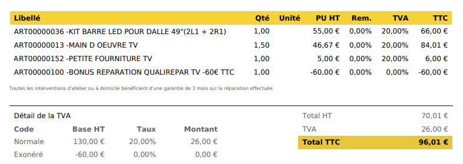
Le client peut bénéficier d'une prime à la réparation de plus de soixante euros pour une télévision. Le détail de la facture : 66,00 € pour les barres LED, 84,01 € pour la main-d'œuvre, 6,00 € pour les petites fournitures (scotch, accessoires divers).
Documentation technique complète sur le fonctionnement des barres LED et la structure interne d'une télévision :
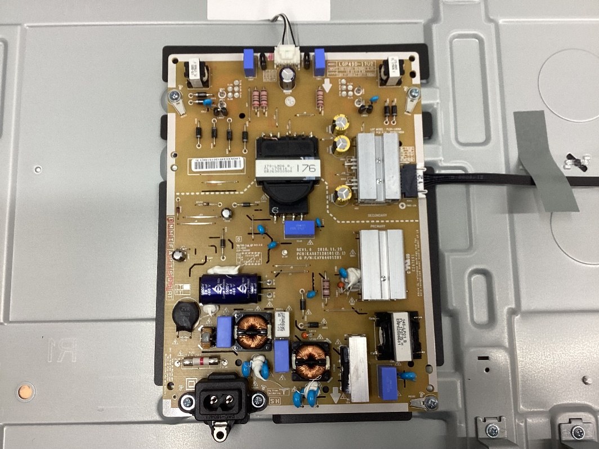
Réussites : changement des barres LED sans rien casser, compréhension du fonctionnement interne d'une télévision dans ses moindres détails, utilisation du testeur LED à chaque étape de la réparation.
Difficultés : débranchement de certains fils très bien accrochés (résolution : tournevis plat), retrait de l'écran (résolution : ventouses), remise des vis au bon emplacement (résolution : photos prises lors du démontage, avec attention portée au filetage selon la matière traversée).
Dans l'ensemble, peu de difficultés majeures durant ce changement de barres LED.
Section 05
Pour conclure, ce stage m'a apporté de nombreuses clés dans la réparation d'électroménager et de télévisions, même s'il reste toujours des zones d'ombre dans mes connaissances. J'ai bien aimé réparer des machines et comprendre le fonctionnement du matériel du quotidien : télévisions, machines à laver, et autres appareils.
Ce stage m'a permis de confirmer mon choix d'orientation et d'ouvrir des portes dans la maintenance, domaine présent aussi dans l'audiovisuel. J'ai eu envie de faire de la maintenance, mais je garde toujours mon choix de l'audiovisuel en premier.
Ce que j'ai le plus apprécié : la réparation des télévisions et les interventions à domicile, le contact avec la clientèle.
Ce que j'ai moins apprécié : la réparation d'électroménager, même si j'en ai fait relativement peu.